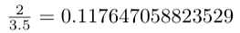
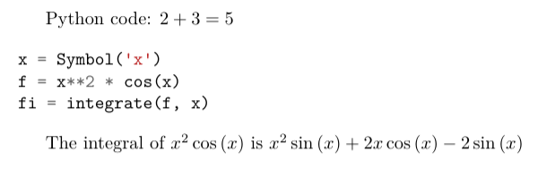

LaTeX Howto and FAQ
Howto
Create documents in Hebrew
Here are suggestions for using LaTeX in Hebrew with CoCalc:
Change the LaTeX build engine to XeLaTeX. In the “Build” pane, which appears by default at lower right when you are editing a .tex file, click the the “Engine” button and select “XeLaTeX”.
Use the polyglossia LaTeX package, which is already installed in CoCalc, to allow using Hebrew other language(s) in the same file. This can be useful if you wish to enter Arabic numerals.
Use LaTeX Noto fonts for Hebrew, they are already installed in CoCalc.
Here is an example of commands you could use in the prologue of your .tex document to combine Hebrew and English:
\usepackage{polyglossia} \setmainlanguage{hebrew} \newfontfamily{\hebrewfont}{Noto Serif Hebrew} \setmainfont{Noto Serif Hebrew} \setmainlanguage{english} \setmainfont{Times New Roman}
Customize Jupyter notebook LaTeX export settings
Cocalc exports Jupyter notebooks to LaTeX using nbconvert when “File > PDF via LaTeX” is clicked in the menu. If you want to customize the default LaTeX settings, you need to override system files found at /ext/jupyter/nbconvert/templates/latex. Instructions for creating these overrides can be found in this gist file: custom nbconvert exports.
Deal with large documents across multiple source files
Built-in Support for Multi-File Documents (preferred)
Native CoCalc support for multi-file documents has recently been added. Learn more about it at LaTeX Multi-File Support.
The subfiles Package (legacy method)
Before direct support for multi-file documents was available, the best way was to use the subfiles package as described here.
There is an extended example demonstrating how this works in the CoCalc Library.
Click “Files” and open the Library. Then select Multiple source files in CoCalc in the LaTeX templates section.
The same example is also available at cloud-examples/latex/multiple-files.
To do this for your existing document,
let’s suppose your LaTeX project is composed of one master.tex file and several chapter-1.tex, chapter-2.tex, etc.
CoCalc’s LaTeX editor only knows about the currently opened file,
and using \import{} doesn’t work, because the chapter-*.tex parts are not proper documents.
The subfiles package does not only collect the partial documents into one,
but also extracts the preamble of the master.tex file for each chapter-*.tex in order to create valid subdocuments.
Following the subfiles documentation, do this:
\usepackage{subfiles}inmaster.tex\subfile{⟨subfile name ⟩}for each subfile inmaster.tex’sdocumentenvironment (i.e. instead of\includeor\import).For each
chapter-*.texsubfile:\documentclass[⟨master.tex file-name⟩]{subfiles} \begin{document} ⟨text, graphics, etc.⟩ \end{document}
After that, all *.tex files can be compiled and all other features like forward/inverse search work, too.
Draw using Asymptote
Asymptote is a
powerful descriptive vector graphics language that provides a natural coordinate-based framework for technical drawing. Labels and equations are typeset with LaTeX, for high-quality PostScript output.
In order to tell LatexMK
– which CoCalc’s LaTeX editor is using by default under the hood –
to process the generated *.asy files,
you need to setup your ~/.latexmkrc file in your home directory.
In order to do that, open up the Files tab in your project
and click on the home-icon to make sure you’re in your home directory.
Then, click on Create to create a new file and enter the filename .latexmkrc.
Don’t overlook that leading dot in the filename, which is used for hidden files in Linux.
Then, enter these lines in the text editor and save the file:
sub asy {return system("asy \"$_[0]\"");}
add_cus_dep("asy","eps",0,"asy");
add_cus_dep("asy","pdf",0,"asy");
add_cus_dep("asy","tex",0,"asy");
These additional rules tell LatexMK to essentially run asy <basename>-*.asy
on each file during the build process.
In case there are problems, you can run that command-line in a Linux Terminal
to see all details about any possible errors.
More information: Asymptote LaTeX Usage.

Enable shell-escape to plot using Gnuplot
There are situations where the LaTeX document calls certain utilities to accomplish a task. One example is creating plots via Gnuplot right inside the document.
For example, a snippet of tex code could look like this:
\begin{figure}
\begin{tikzpicture}
\begin{axis}[ ... ]
\addplot [...] gnuplot [raw gnuplot] {plot [-0.015:0.015] cos(380*x);};
\end{axis}
\end{tikzpicture}
\end{figure}
In the middle, Gnuplot runs plot [-0.015:0.015] cos(380*x); to plot a cos function.
The problem is that by default the PDF LaTeX Engine doesn’t allow to run arbitrary commands due to security concerns. You’ll see an error like that:
Package pgfplots Error: Sorry, the gnuplot-result file 'gnuplot.pgf-plot.table'
could not be found.
Maybe you need to enable the shell-escape feature? [...]
Note
You have to select the PdfLaTeX (shell-escape) engine from the selector in the build panel or modify the build command maually.
As a result, Gnuplot will be run, the error vanishes, it creates the necessary temporary files for the PGF plot, and the PDF will show the plot.
You can download the example gnuplot.tex and see it in a screenshot below:

Include an image
Upload a PNG or PDF file via CoCalc’s “Files” interface. The uploaded image should be in the same directory as the
.texfile Otherwise, use relative paths like./images/filename.pngif it is in a subdirectoryimages.Add
\usepackage{graphicx}to the preamble of your file.At the place where you want the image, insert a
figureenvironment. Useincludegraphicsto include the file, withwidthto indicate image width, e.g. use0.9to take up 90% of document width.Add
\centeringto have your image and caption centered in the document, and usecaptionto add a caption.
Here’s the complete example:
\usepackage{graphicx}
...
\begin{document}
...
\begin{figure}
\centering
\includegraphics[width=0.9\textwidth]{./images/filename.png}
\caption{here is a picture}
\end{figure}
There are many more options for image placement. See for example the Wikibooks LaTeX book section on Floats, Figures and Captions.
Insert a backslash or dollar sign
The \ character has a special meaning.
It signals a LaTeX command or is used as an escape character.
To enter a backslash, escape its meaning by entering it twice: \\.
A dollar sign is entered as \$, which escapes the meaning of “formula-start”.
Install packages in a project
You can install LaTeX packages in your project:
Open a Linux Terminal
Check by running
kpsewhich -var-value TEXMFHOMEwhere you can install packages locally. It should tell you/home/user/texmf.Create the target directory based on the name of the package. E.g. if the package is called
webquiz, runmkdir -p /home/user/texmf/tex/latex/webquiz.Change your current directory to this one via
cd /home/user/texmf/tex/latex/webquiz.Either download the package via
wget ...from CRAN and extract it viatar xf <downloaded tarball>orunzip .... Alternatively, runopen .to open this path in CoCalc’s file explorer and use it to upload the style files there.
In any case, all files like *.sty and *.cls in that directory will be picked up when you load that package.
You can confirm that by searching for the style file, e.g. run kpsewhich [name.sty]
and you should get a location like /home/user/texmf/tex/latex/.../[name.sty].
Note In case you use a zip file, place it in /home/user/texmf and run unzip [filename.zip] (or if there are already files, unzip -o [filename.zip] overwrites what’s there).
It should extract into the correct subdirectories, in particular ./tex/latex etc.
Setup texmf in a project
A CoCalc project is equivalent to a linux user account.
Therefore, the texmf discovery mechanism works the same as on a local machine.
By default, you should be able to put your own packages and styles into ~/texmf.
In case you just want to add a styles-file with common commands
for the tex processor available to all your .tex files,
you have to put them into the ~/texmf/tex/latex/local sub-directory.
That way they’re always found by the latex processor.
(see stackexchange discussion)
Otherwise, you might have to run run texhash ~/texmf in a terminal or the little “Terminal command” textbox in “Files”.
Note: the ~ stands for the HOME directory, which is the root directory you see in the “Files”-listing.
You can click the home icon to jump into the home directory.
texmf is a subdirectory right there.
Spell check a LaTeX document
Whenever you save a LaTeX document, it will run a spell checker and underline the words that are not spelled correctly. By default, it uses the language you’ve set in your web browser.
You can change the autosave interval to be very short in account settings (under editor) if you need the spell checking to update frequently.
Seeing a list of alternative words (correct spellings) isn’t supported directly in the editor yet Issue #3461.
For now, a workaround is to run LaTeX-aware aspell. See Use the aspell Linux command for details.
Turn off automatic build and PDF preview
If you’re working on a large LaTeX project including subfiles, you may want to turn off compilation of the individual subfiles.
Note
In general, you can open up the main file and all subfiles will be detected.
Here are some steps you can take:
By default, building latex documents on saving is enabled. You can disable it under
Account→Preferences→Editor settingsby removing the check mark forBuild on save: build LaTex file whenever it is saved to disk.You can also disable the build process for a specific file by opening the “Build” dialog and entering
echoin the line where the command is. Then it just does nothing when it tries to build.If you like, you could also structure your LaTeX in such a way that subdocuments also build via the CTAN subfiles package. You can find an example in the CoCalc Library. In a project, click on
+ New, and in the middle you will find the Library. Look underLaTeX templates→Multiple source files in CoCalc. Then, each included file will also build on its own.
Use PSTricks macros
PSTricks is a set of macros for including PostScript drawings in a TeX document. The website has an extensive gallery of examples.
The main thing to remember when using PSTricks is to set Engine in the CoCalc Build panel to XeLaTeX as in this small demo .tex file and resulting .pdf.
Work with SageTeX, PythonTeX, or Knitr
CoCalc supports several ways to embed code within a document. Such code is automatically processed and evaluated during generating the document and any output appears as part of the PDF output itself. In particular, you can insert small calculations and formulas (Sage, SymPy, …), Python code, R calculations, plots, data tables, etc. This is frequently used as part of reproducible research.
SageTeX
Any .tex file loading the sagetex package is automatically processed via [[SageMath]].
First, Sage code is extracted into a .sage file, then sage ... evaluates that file, and finally the LaTeX engine creates the PDF document by replacing all snippets of Sage code by their evaluated result.
CoCalc handles all details for you!
To get going, you just have to insert \usepackage{sagetex} into the preamble of your document.
Calculations are done like that: $\frac{2}{3.5} = \sage{n(2/17)}$, which results in .
See SageTeX documentation for more details and examples. There is also a SageTeX example in the CoCalc Library. Besides that, the SageMath Documentation could also be of help!
PythonTeX
PythonTeX follows the same spirit as SageTeX.
Embedded Python commands and blocks of code are extracted into a .py file,
Python 3 evaluates them,
and at the end the LaTeX engine merges the generated output snippets into the final document and renders the PDF file.
CoCalc handles all details for you!
To get going, insert \usepackage{pythontex} into the preamble of your document.
Then, you can insert inline code snippets via \py{} and blocks of code inside of \begin{pyblock} and \end{pyblock}.
There is also support for [SymPy] code via \sympy{} or plots via Pylab using \pylab{}.
For example, code like this:
Python code: $2+3 = \py{2+3}$
\begin{sympyblock}
x = Symbol('x')
f = x**2 * cos(x)
fi = integrate(f, x)
\end{sympyblock}
The integral of $\sympy{f}$ is $\sympy{fi.simplify()}$
produces:
You can read more in the PythonTeX Documentation. Also note, that sometimes it is necessary to run “Build” again to properly re-process all code snippets. There is also a PythonTeX example document in the CoCalc Library.
Knitr
Knitr LaTeX documents are different from SageTeX and PythonTeX.
They have their own filename extension (CoCalc supports .rnw and .Rtex) and instead of calling LaTeX commands of a package, they feature their own syntax for embedded blocks and statements.
Historically, at first Sweave was added to R,
but Knitr is a much more modern variant with more features
(see Transition from Sweave to Knitr).
In general, the compilation works by first processing the input file via Knitr,
which runs R and generates a .tex document.
Then, the Latex engine processes that .tex file as usual.
CoCalc handles all details for you.
To get started, create a file ending with .rnw (Rweave/Sweave syntax) or .Rtex (code is in comment blocks).
Both will initialize the file with a template explaining you how to work with it.
For example, a block like:
<<histogram-plot4, dev='tikz', fig.height=4, fig.width=10>>=
data <- rnorm(1000)
hist(data)
@
produces a plot of a histogram, drawn using TikZ.

Note that Forward & Inverse Search will work as well as reporting errors.
FAQ
The PDF cannot be built. What’s the problem?
Use TimeTravel to go back to a working version. In the TimeTravel view, you can use
Changesto see exactly what changed between revisions.Another tip is to click the format button, since sometimes formatting properly can give you a good sense of what you might have messed up.
More general, you can also use revision control like [Git] to track your changes. Just create a Terminal file or frame in the latex editor and go ahead and work on the command-line as usual.
If you need more detailed help, make sure to open the
.texfile and make a support request by clicking theHelpbutton at the top right.
What should you do if the preview does not update?
Possible reasons:
Are there any errors in the “Issues” tab? LaTeX only compiles well if there are zero reported errors.
Long documents could take an extended period of time to complete. In the “Preview” tab, disable the preview and only enable it once to avoid piling up too much work on the back-end.
Similarly, computational-heavy “SageTeX” computations could lead to excessive compilation times. You can pre-compute results or split the document into smaller parts.

{kind=link}
{kind=link}
{kind=link}
{kind=link}